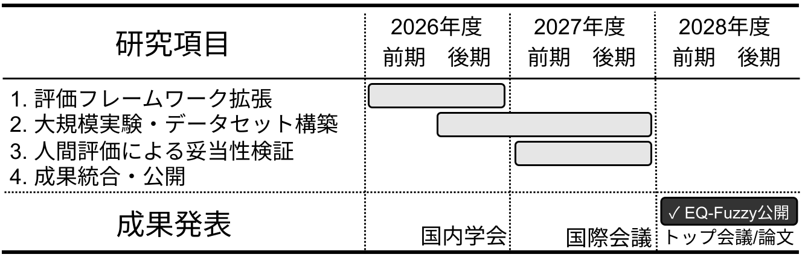

採択された基盤研究（C）を題材とした、
審査員視点・査読方式・URA添削による改善プロセス
2026年度 下関市立大学 学内科研費説明会
講師：白濵 成希
下関市立大学 データサイエンス学部
2026年7月30日(木) 13:10〜14:40
本講演の位置づけ
- 採択された一件を、作成途中の判断と修正まで含めて振り返る
- データサイエンス分野の事例から、分野を越えて使える原則を抽出する
- 採択を保証する必勝法ではなく、評価を落とすリスクを減らすプロセスを示す
本事例は令和8（2026）年度基盤研究（C）への
応募時点の制度・様式に基づく。
最も伝えたい5つの原則
- 審査委員の視点に立つ
短時間で論理構造を理解できるようにする - 研究実績を材料にする
論文・予備実験・コード・共同体制を次の問いへつなぐ - 価値と実現可能性を同時に示す
高い目標と「この研究者なら実施できる」という根拠を両立する - 十分に考えてから圧縮する
最初からページ数へ押し込まない - 改善を仕組みにする
自己査読・研究仲間・URA・最終整合性確認を期限から逆算する
自己紹介と本講演の立場
講師
白濵 成希
下関市立大学
データサイエンス学部 教授
研究分野
- ファジィ理論
- 感性情報処理
- データ分析・人工知能
今回共有すること
- 採択された一件の作成過程
- 初稿にあった不整合
- 査読方式による改善
- URAによる3回の添削
- 他分野にも転用できる原則
採択課題の基本情報
| 項目 | 内容 |
|---|---|
| 研究課題 | ファジィエントロピーとペルソナ多様性に基づくLLM感情知能の不確実性評価 |
| 研究課題番号 | 26K14983 |
| 研究種目 | 基盤研究（C）・基金・一般 |
| 審査区分 | 小区分61040：ソフトコンピューティング関連 |
| 研究代表者 | 白濵 成希 |
| 研究分担者 | 渡邉 志 教授／中谷 直史 准教授 |
| 研究期間 | 2026年4月1日～2029年3月31日 |
| 採択後の配分額 | 4,550千円（直接経費3,500千円、間接経費1,050千円） |
採択研究の概要
問い：LLMは人間の感情の機微を、どの程度適切に理解できるか
ファジィエントロピー
感情評価の曖昧さ・不確実性を数値化する
ペルソナ設定
異なる立場や視点を与え、認知的多様性を引き出す
- 40種類以上のLLMで大規模実験
- 人間評価との比較による妥当性検証
- データ・解析スクリプト・指標を EQ-Fuzzy として公開
この事例を扱う理由
この一件に、科研費申請の主要な論点が含まれている
- 学際的テーマの審査区分
- 専門用語の初出説明
- 学術的「問い」の明示
- 目的と研究項目の分離
- 既存研究との差別化
- 予備データによる実現可能性
- 概念図とガントチャート
- 研究分担者の役割
- 人間参加型実験の倫理
- 研究計画と予算の対応
- 本文・図・電子申請の整合性
- URAによる段階的な添削
審査委員はどのように読むのか
2025年7月の科研費セミナーで紹介された審査例
- 基盤研究（C）の審査委員が約80件を担当
- 1件を5分前後で初読する例
- まず業績・過去の研究費・研究者情報を確認する例
ここから得た教訓
- 最初から最後まで、同じ密度で精読されるとは限らない
- 第一印象・概要・業績・図・見出しが大きな意味を持つ
- 「読めば分かる」ではなく、短時間で誤解なく分かることを目指す
読み手中心で申請書を設計する
審査委員は関連分野の専門家でも、申請テーマ固有の用語を当然に知っているとは限らない
- 重要用語を初出時に一文で定義する
- 一文を過度に長くしない
- 小見出し自体を段落の要約にする
- 強調箇所を限定して視線を誘導する
- 図だけでも研究の違いと全体像が分かるようにする
- 問い・目的・方法・成果で同じ言葉を一貫して使う
申請者の頭の中にある研究を、
審査委員が評価できる構造へ変換する。
実際の作成スケジュール：準備と初稿
| 時期 | 作業 | 主な成果物・判断 |
|---|---|---|
| 2025年7月 | 科研費セミナーを受講・動画視聴 | 基礎資料を理解 |
| 2025年7月 | 重要点を抽出 | 2_ポイント.md |
| 2025年7月 | 分野・種目に合わせて具体化 | 3_マニュアル.md |
| 2025年7～8月 | 公式様式と研究実績を対応づけ | 初稿方針を作成 |
| 2025年8月 | 戦略・問い・研究項目・予算を自己査読 | 改善プロセスを記録 |
文章を書く前に、審査の読み方と評価構造を学ぶ。
スケジュール：URA添削から採択まで
| 時期 | 作業 | 主な成果物・判断 |
|---|---|---|
| 2025年8月21日 | URA添削1回目 | 用語・配置・構造 |
| 2025年8月28日 | 概念図・ガントチャートを作成 | 独自性・実現可能性を可視化 |
| 2025年9月1日 | URA添削2回目 | 本文と図を統一 |
| 2025年9月9日 | URA添削3回目 | 電子申請の金額を確認 |
| 2025年9月16日 | 最終版を提出 | 3版として出力 |
| 2026年 | 採択・交付 | 課題番号26K14983 |
構想・初稿・整合性・電子申請の確認時間を、
提出日から逆算する。
改善プロセスの全体像
学ぶ・原則化する
1. 学ぶ
セミナー・公式資料から、審査の読み方と評価構造を理解する
↓
2. 原則化する
ポイント → 分野別マニュアル → 公式様式との対応
自分の言葉で、繰り返し使える評価基準へ変換する。
改善プロセスの全体像
申請へ落とす・第三者と整える
3. 申請へ落とし込む
研究実績 → 初稿 → 審査委員視点の自己査読
↓
4. 第三者と整える
URA添削3回 → 最終整合性確認 → 電子申請 → 提出
内容を作る段階と、伝わり方・整合性を検査する段階を分ける。
セミナーから原則を抽出する
133ページの資料を「読んだ」で終わらせず、
執筆・査読で繰り返し使う 2_ポイント.md に再構成
二つの効果
- 何が採否に影響するかを、自分の言葉で理解できた
- 初稿や修正版を確認する評価基準が固定された
さらに分野別マニュアルへ
データ・モデル・評価指標・計算資源・再現性・API・公開方針など、
データサイエンス研究で実現可能性を示す要素を具体化
公式様式の要求項目を落とさない
| 公式要求 | 申請書内で明示的に分ける |
|---|---|
| 学術的背景・着想・問い | 学術的背景／着想に至った経緯／核心をなす問い |
| 目的・独自性・創造性 | 研究目的／学術的独自性／創造性・展開 |
| 研究動向・位置づけ | 国内外の研究動向／本研究の位置づけ |
| 何を・どのように・どこまで | 研究項目ごとの目的／方法／明らかになること |
| 準備状況 | 予備データ／確立済み手法／ソフトウェア／共同体制 |
| 国際性 | 先導性／協同性／稀少性・日本独自の価値 |
- 複数の要求を一つの長い段落へ埋没させない
- 小見出しを付け、審査委員が該当箇所をすぐ見つけられるようにする
概要・背景・着想・問いを整理する
概要は最後に書く
- 背景と学術的「問い」
- 研究目的
- 研究の展開・応用
本文の完成後、同じ目的・問い・用語で要約する
三つを分ける
- 背景：分野の流れと未解決問題
- 着想：申請者自身が行い、分かったこと
- 問い：研究期間中に答える中心問題
問いは段落へ埋めず、独立して提示する
研究目的と研究項目を分ける
目的：最終的に何を成し遂げるか
LLM感情理解能力の評価に
「不確実性」と「多様性」を導入し、
標準評価ベンチマークEQ-Fuzzyを構築・公開する。
研究項目：目的を達成するために何を実施するか
- 評価フレームワークを拡張する
- 40種類以上のLLMで大規模実験を行う
- 人間評価との比較で妥当性を検証する
- データ・コード・指標・リーダーボードを公開する
独自性と創造性を比較で示す
独自性
既存研究と何が違うか
- 結果だけでなく、不確実性を定量化
- ペルソナとtemperatureで多様性を扱う
創造性
その違いが何を可能にするか
- 正誤から「確からしさ・曖昧さ」へ拡張
- 感情的個性や信頼性を共通基盤で比較
- 支援AIのモデル選択・改善へ展開
「独自性が高い」と宣言せず、
従来法との比較で示す。
研究方法を作業リストにしない
各研究項目を、次の順序で書く
| 要素 | 答える問い |
|---|---|
| 目的 | なぜ、その実験・調査・分析を行うのか |
| 方法 | どのデータ・対象・条件・手法・指標を使うのか |
| 明らかになること | どの結果が、学術的「問い」のどこに答えるのか |
| 代替案 | 想定通りに進まない場合、何を変更するのか |
- 「データを集める」「モデルを実行する」「学会発表する」だけでは、研究計画ではなく作業の列挙になる。
準備状況と遂行能力を事実で示す
準備状況
- 予備実験の件数・成功率
- 開発済みソフトウェア
- 利用可能なデータ・設備
- 共同研究者と役割
- 倫理審査・データ管理の準備
研究遂行能力
- 論文リストだけを並べない
- 各業績を研究項目へ接続する
- 何を実施できる証拠かを説明する
タイトルは一行要旨
- 研究対象
- 中心手法・観点
- 解決する問題／明らかにするもの
確認すること
- 専門用語を詰め込みすぎていないか
- 固有の成果物名が研究目的を隠していないか
- 一読して研究の輪郭を把握できるか
- 本文の論理が完成した後に、もう一度見直したか
審査区分は評価者を選ぶ戦略
審査区分は、研究の中心的貢献を評価する審査委員集団の選択
- 中心的貢献は、方法論・理論・応用のどこにあるか
- その区分で評価される語彙・問題設定は何か
- 自分の主要業績と最も連続する区分はどこか
- 過去の採択課題の中で、どの強みが見えるか
初期候補 61030 知能情報学関連
↓ 再検討
提出・採択 61040 ソフトコンピューティング関連
T字型の審査委員と国際性
T字型の審査委員を想定
- 広い関連知識はある
- 申請者固有の用語までは知らない
- 略語は正式名称と一文の定義を付ける
- 「高性能」「大規模」は数値で示す
- データ取得可能性・指標・再現性を示す
国際性を三つの観点で設計
| 観点 | 本事例 |
|---|---|
| 先導性 | EQ-Fuzzyという評価基盤 |
| 協同性 | 国際発信・将来の共同研究 |
| 稀少性 | 日本語文学と普遍的方法 |
「国際会議で発表する」だけで終わらせない
公式様式が要求する構成
| セクション | 枚 | 主な要求内容 |
|---|---|---|
| 研究目的・研究方法など | 4P | 問い、目的、独自性、方法、準備、国際性、役割 |
| 研究遂行能力・研究環境 | 2P | 主要業績、研究施設・設備・資料・人的体制 |
| 人権保護・法令遵守 | 1P | 同意、個人情報、倫理審査、著作権、安全対策 |
| 最終年度前年度応募 | 1P | 該当条件と公式指示を確認 |
- 本文は11ポイント以上
- 指定ページ数、タイトル、指示書きを変更しない
- 令和8年度 基盤研究（C）・様式S-14
公式様式で研究構想を検査する
公式様式を最初に読み、次の問いで不足を見つける
- 学術的「問い」を一文で示せるか
- 目的・独自性・創造性を分けて説明できるか
- 何を、どのように、どこまで明らかにするか
- 準備状況を客観的事実で示せるか
- 国際性と研究分担者の役割を具体化できるか
- 倫理・法令上の手続を説明できるか
様式は研究構想のチェックリスト
初稿の材料と審査シミュレーション
初稿の材料
- 学術雑誌論文
- 国際会議・国内学会発表
- 既存の助成金申請書
- 予備実験データ
- 実験基盤・ソースコード
- 共同研究者との実績
「材料がなければ料理はできない」
想定した審査委員
- 基盤B・Cの審査経験が豊富
- 1件を5～30分で評価
- 一読して分かる構成を重視
- 申請テーマそのものの専門家ではない
- 説明不足と根拠のない主張に厳しい
生成AIに任せること・任せないこと
適していること
- 研究成果から共通テーマを抽出
- 問い・課題名の複数案を比較
- 公式項目に沿って構造化
- 規則ベースのチェックを反復
- 長い初稿の論理を整理
任せてはいけないこと
- 業績・文献・予備データの創作
- 根拠のない「世界初」
- 制度・区分・予算・期限の無検証採用
- AIの自己評価を採択確率と解釈
- 研究者・分担者・URAの判断を代替
構造化と自己査読に使い、
事実と最終判断は人間が検証する。
採択事例の強み：核心技術
- ファジィ理論
感情評価の曖昧さを数学的に扱う - ファジィエントロピー
感情評価の不確実性を定量化する - ペルソナとtemperature
LLM応答の多様性を体系的に分析する
個別の研究成果を、
新しい評価基盤へつなぐ。
採択事例の準備状況：予備データ
| 指標 | 実績 |
|---|---|
| 評価可能なLLM | 36種類 |
| 予備実験 | 3作品・4ペルソナ・4,320試行 |
| 有効な応答 | 4,227件 |
| 成功率 | 97.8% |
- 複数モデルを同一条件で実行できる基盤を構築済み
- データを取得し、解析できることを数字で証明
既存成果をEQ-Fuzzyへ統合し、
人間評価で妥当性を検証する。
学術的「問い」を3種類から比較する
| 候補 | 問い |
|---|---|
| 記述的 | 多様なLLMは感情の曖昧さをどのように認識するか |
| 方法論的 | 新しい評価軸を確立できるか |
| 社会的 | EQ-Fuzzyで共感的AIの開発に貢献できるか |
最初から一案に固定せず、背景・研究項目・
成果を導ける問いを比較する。
申請の中心となる学術的「問い」
方法論的な問いを選択
感情評価の「不確実性」を定量化するファジィ
エントロピーと、認知的多様性を制御する
「ペルソナ」を組み合わせることで、正解率ベースの評価を超える新たな評価軸を確立できるか。
- 記述的な問い → 背景
- 方法論的な問い → 申請の中心
- 社会的な問い → 展開・意義
研究課題名：初稿案とその課題
ファジィエントロピーとペルソナ多様性に基づくLLM感情知能の不確実性評価ベンチマーク
「EQ-Fuzzy」の創成
見直した点
- 固有の成果物名まで含み、課題名が長い
- 研究として明らかにすることより、成果物の作成が前面に出る
研究課題名：提出版への簡潔化
ファジィエントロピーとペルソナ多様性に
基づくLLM感情知能の不確実性評価
- 研究対象：LLM感情知能
- 中心手法：ファジィエントロピーとペルソナ多様性
- 学術的貢献：不確実性評価
- EQ-Fuzzyという成果物名は本文に残す
提出版を構成する4つの研究項目
| 研究項目 | 目的 | 方法 | 到達点 |
|---|---|---|---|
| 1. 評価フレームワーク拡張 | 複雑な感情と多様な視点を扱う | 感情指標・ペルソナ・メンバーシップ関数を設計し、5モデルでパイロット | 拡張版評価フレームワーク |
| 2. 大規模実験 | モデル間の特性を比較可能にする | 40種類以上のLLMへ同一条件でAPI実験 | 標準化データセット |
| 3. 人間評価 | 指標の妥当性を検証する | 人間に同じ課題を実施し、相関・差異を統計解析 | 妥当性・信頼性の根拠 |
| 4. 統合・公開 | 国際研究コミュニティが再利用できる形にする | データ・コード・指標・リーダーボードを統合 | EQ-Fuzzy公開 |
目的 → 方法 → 明らかになることが、中心的な問いへつながるようにする。
概念図で独自性を伝える

従来：単一の感情ラベル
本研究：ファジィ所属度から評価の不確実性を定量化
ガントチャートで実現可能性を伝える

- 研究項目の順序と依存関係
- 初年度からの着手可能性
- 評価・公開・成果発表の時期
- 年次計画と予算の対応
図は文章より強く記憶される。
本文との不一致を残さない。
研究体制・倫理・予算を計画と整合させる
研究体制
- 代表者：全体統括・評価基盤・大規模実験・発信
- 渡邉教授：ファジィ理論・数理モデル
- 中谷講師：人間評価・統計解析・妥当性
倫理・法令
- 同意と参加中止の権利
- 匿名化・個人情報保護
- 倫理審査
- 著作権・データ管理
- 公開ライセンス
予算
- GPU・LLM API
- 国内外旅費
- 人間評価の謝金
- 投稿・公開費
各費目を研究項目と年度へ接続する
本文・図・体制・倫理・予算は、
同じ研究計画の異なる表現
URA添削1回目：用語・配置・構造
2025年8月21日版
- 重要用語を初出時に説明する
ファジィエントロピー、VAS、Likert尺度など - 本文と概念図の間に余白を設ける
本文・図・次節の境界と視線の流れを明確にする - 研究組織と役割分担を研究方法の中へ移す
審査委員が「誰が実施するか」を確認する場所へ置く
教訓
情報は、単に書かれていればよいのではない。
理解できる表現と、評価しやすい位置へ配置する。
URA添削2・3回目：整合性と電子申請
2回目：2025年9月1日
研究項目3の期間
- 本文：2～3年目
- 図：2年目
→ 提出版では2年目に統一
3回目：2025年9月9日
電子申請画面の
「研究期間内に使用する金額」
→ 総額ではなく、代表者本人の予定額を入力
→ 分担者分を差し引く
| 回 | 主な対象 | 防いだリスク |
|---|---|---|
| 1回目 | 用語・配置・構造 | 読解困難、公式構成からの逸脱 |
| 2回目 | 本文と図 | 計画の不一致、実現可能性への疑念 |
| 3回目 | 電子申請 | 金額の定義違いによる誤入力 |
初稿から最終版までの代表的改善
| 観点 | 初期段階 | 最終版 |
|---|---|---|
| 審査区分 | 61030を有力候補 | 61040で提出・採択 |
| 課題名 | EQ-Fuzzyを含む長い課題名 | 対象・手法・貢献へ簡潔化 |
| 学術的「問い」 | 複数の候補 | 方法論的な問いを独立表示 |
| 役割分担 | 独立した節 | 研究実施計画へ統合 |
| 研究項目3 | 本文2～3年目／図2年目 | 2年目に統一 |
| 用語 | 一部に説明不足 | 初出説明を意識 |
| 応募時予算 | 初期文書に総額不一致 | 公式様式で4,950千円に整合 |
| 電子申請 | 代表者使用額の定義が不明確 | URAと入力箇所・意味を確認 |
最初から完璧に書くのではなく、
問題を提出前に発見して直す。
再現可能な科研費調書作成 10ステップ
- 研究実績を棚卸しする
- 最新の公式様式・審査基準を読む
- 候補となる審査区分を調べる
- 学術的「問い」を一文で書く
- 目的と研究項目を分ける
- ページ数を気にせず完全版を作る
- 5分審査をシミュレーションする
- 複数の査読ループを回す
- 公式様式へ圧縮する
- 電子申請まで最終確認する
査読ループ
自己査読 → 生成AIの規則チェック → 同分野研究者
→ 異分野研究者 → URA → 全文整合性確認
提出前チェックと、次の申請へ向けて
提出前の5つの視点
- 5分で研究の全体像が分かるか
- 問い・独自性・方法が研究として強いか
- 予備データ・体制・予算から実現可能か
- 概要・本文・図・電子申請が整合しているか
- 倫理・法令・データ管理に問題がないか
日常から申請を強くする
- 毎年、論文・発表・コード・データを積み上げる
- フラッグシップとなる学会・コミュニティを持つ
- 不採択も評価結果として分析し、申請を続ける
- URAを早い段階から活用する
訴えかける前に、審査委員が理解できる申請書にする。
ご清聴ありがとうございました